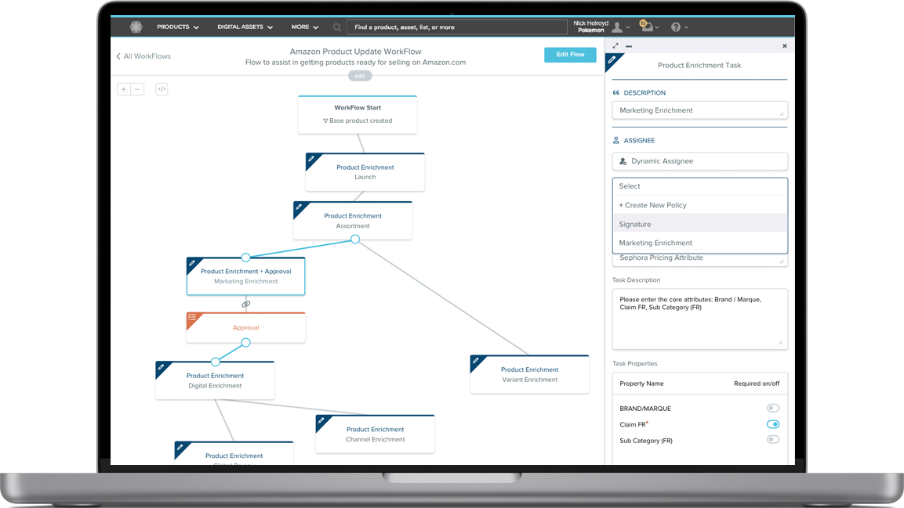
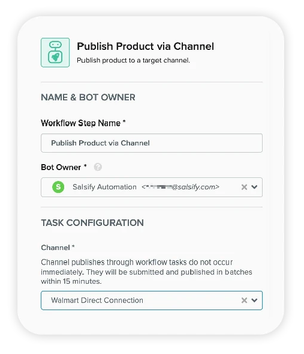

Salsify empowers brands by providing tools to track and analyze inventories, presentation, and sales of goods on digital shelves. I lead the design of two new product verticals (Workflow, and Perspectives), and managed design of two other verticals.
Workflow
Most Salsify customers, especially the really big ones like L'Oréal or Lego, had extremely complicated processes that new products took in order to go from creation to ready for sale on sites like Amazon or Walmart.com - I spent nearly a year designing and building a drag and drop "workflow" for Salsify.

A workflow consisted draggable actions. Each action could be connected to another, allowing for a series of checks and balances across a product. Users could assign specific employees to various tasks like "send finalized designs to engineering" or "write product copy", and assign other employees the ability to sign off on tasks which would push the workflow to the next step.

Automate with Bots
I designed connectable bots as a drag & droppable element. Each bot is able to automate tasks based on previously completed tasks in the workflow. For instance if (marketing copy is completed) > then > (submit copy for review)
Perspectives
As Salsify grew, we began expanding the Channels (e-commerce websites) available for customers in which to publish their sellable products/inventories. We needed a new way to view these products from the context of the sites they were being sold on. Perspectives was the perfect way to navigate this new world.